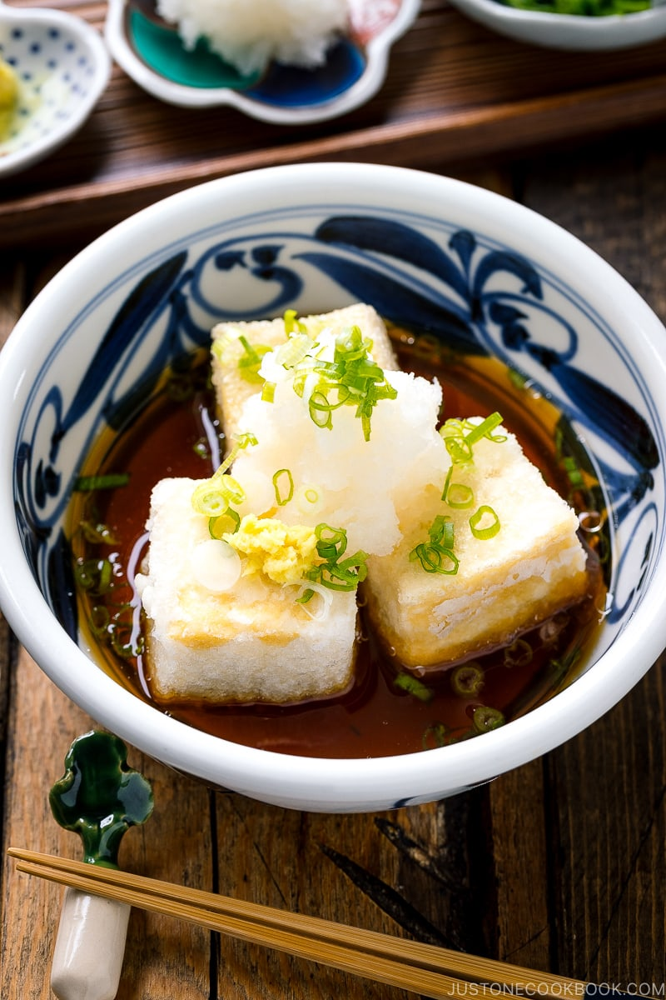
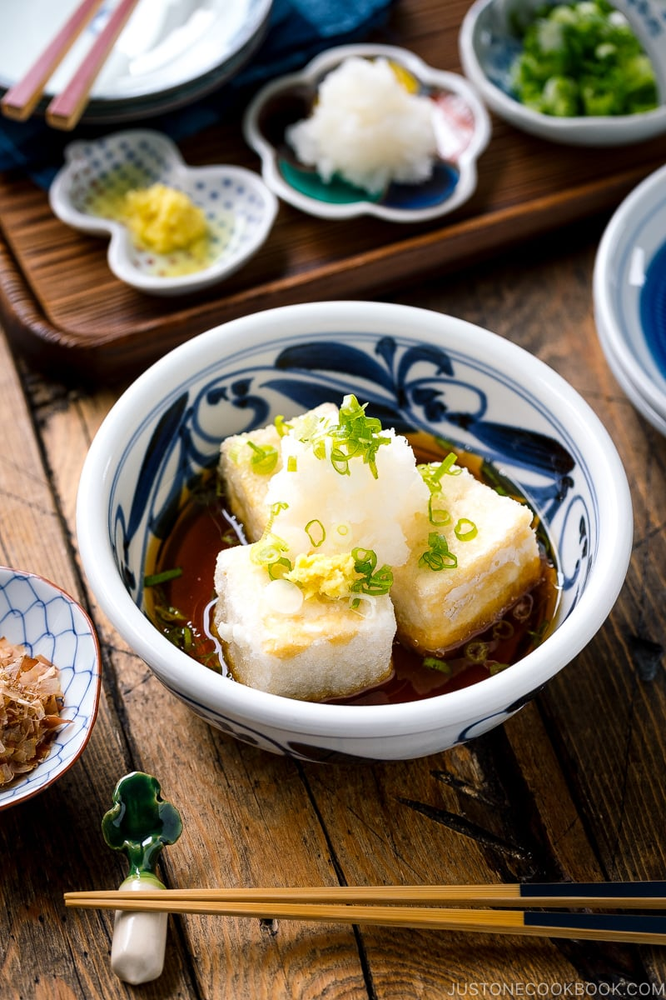

Agedashi-Tofu

Description
What is your favorite appetizer when you dine at a Japanese restaurant?
Many JOC readers told me that they love ordering Agedashi Tofu (揚げ出し豆腐).
Served in a sweet-savory broth, these lightly fried crispy tofu have an airy crunch
and melt-in-your-mouth texture.
So good that you wish you could eat the entire bowl yourself!
Ingredients
- Medium-firm Todu
- Potato starch
- Cookiling Oil
- Tsuyu Sauce
- Garnish
Steps
- Drain the tofu for 15 minutes.
Don’t drain too long if you want
the soft velvety texture on the inside.
- make tsuyu sauce by combining dashi,
mirin, and soy sauce.
- Cut the tofu block into 6 pieces and
coat them with potato starch.
-
Deep fry the tofu for 2 minutes until
lightly browned and drain the excess oil.
-
Serve the tofu in a bowl and pour the tsuyu
sauce. Garnish the tofu with grated daikon,
chopped green onion, grated ginger, and bonito flakes.

Return to main page